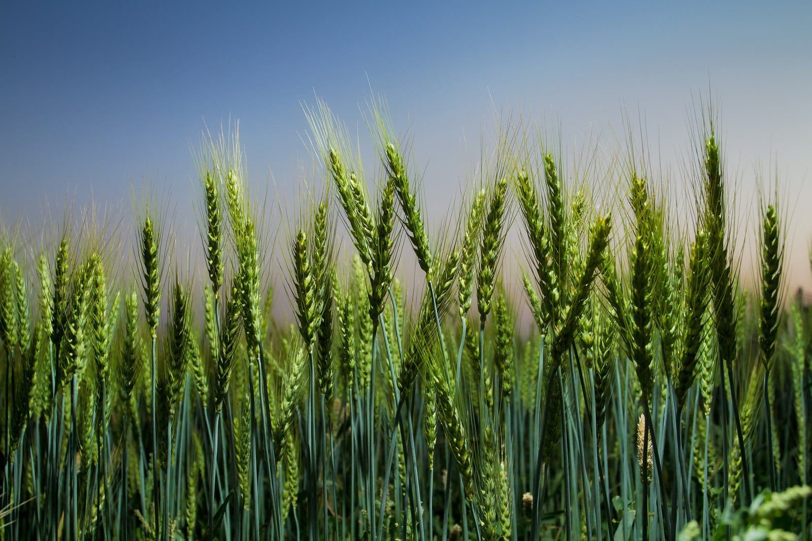
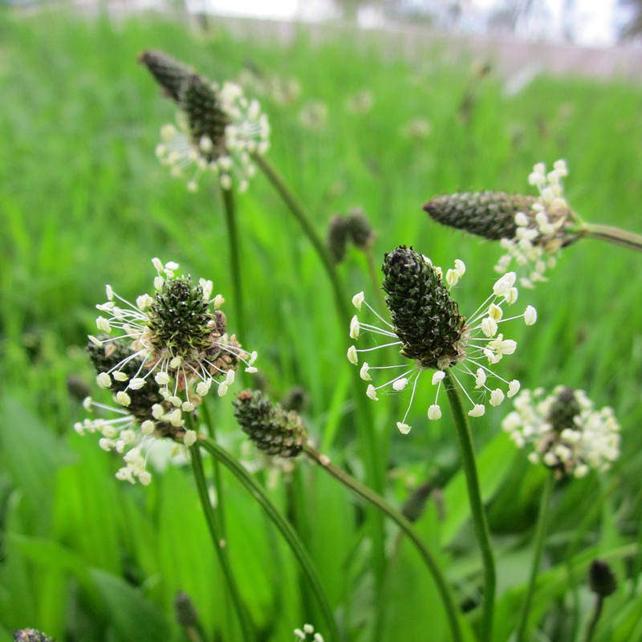

id vs class · Three Floating Cards
This page uses a single id (page-wrapper) for
the main container and a repeated class (card)
for the 3 content boxes below.
Taraxacum officinale
-
Taraxacum officinale
- Dandelion (English)
- Diente de león (Spanish)
- Dent de lleó (Catalan)
- Peak season: Mid March – Late May
- Habitat: Sunny meadows, roadside verges, urban lawns
-
Allergy notes:
- Mild “pollen tickle” sneezing episodes
- Light eye watering on windy days
- Occasional nose itching after close contact
Gentiana verna
-
Gentiana verna
- Spring Gentian (English)
- Genciana (Spanish)
- Genciana (Catalan)
- Peak season: Late April – Early June
- Habitat: Rocky alpine slopes, high mountain pastures
-
Allergy notes:
- Subtle frontal sinus pressure after long exposure
- Slight throat dryness in sensitive hikers
- Transient “cold air” sensation in the nose
Bellis perennis
-
Bellis perennis
- Daisy (English)
- Margarita común (Spanish)
- Margarida comuna (Catalan)
-
Peak season: Early March – Early September
-
Habitat: Lawns, park clearings, low grass fields
-
Allergy notes:
- Low-grade “itchy nose” reflex when lying on the grass
- Very mild eyelid irritation after prolonged contact
- Soft “pollen fog” sensation during mowing days

Triticum aestivum
-
Latin name:
- Wheat (English)
- Trigo (Spanish)
- Blat (Catalan)
-
Peak season:
Late April – Early July
-
Habitat:
Cultivated fields, open plains, dry temperate regions
-
Allergy notes:
- Moderate nasal congestion during pollination
- Dry throat on windy harvesting days
- Sensitivity increase when combined with grass pollen
Urtica dioica
-
Latin name:
- Nettle / Stinging Nettle (English)
- Ortiga (Spanish)
- Ortica (Catalan)
-
Peak season:
May – September
-
Habitat:
Moist soils, woodland edges, riverbanks, shaded gardens
-
Allergy notes:
- Mild contact rashes (fictionalized: airborne stinging effect)
- Slight cheek tingling after prolonged proximity
- Low-intensity sinus flare-ups during full bloom

Plantago lanceolata
-
Latin name:
- Ribwort Plantain (English)
- Llantén estrecho (Spanish)
- Llant de fulla estreta (Catalan)
-
Peak season:
April – June
-
Habitat:
Road verges, grazing meadows, compacted soils, footpaths
-
Allergy notes:
- Noticeable sneezing episodes in sensitive individuals
- Slight ear pressure linked to high-density pollen days
- Short-lived nasal dryness when nearby grass is cut
⇠ scroll ⇢